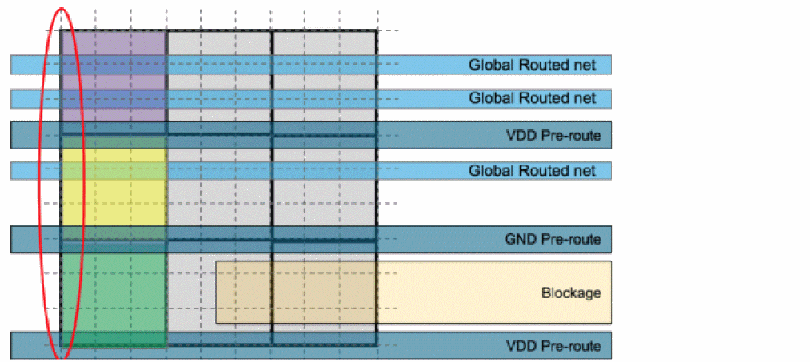

Global Cells
Global Routing generates a grid of global cells (known as gcells) in the design. The size of a global cell on a given layer is a multiple of the track pitch of that same layer. To calculate congestion, use the number of tracks that cross a gcell edge. This means:
- The capacity of a gcell edge is the total number of tracks that cross that edge.
- The availability of a gcell edge is the capacity minus the number of tracks already used on that edge.
To know the horizontal capacity of a gcell from the following figure, review the left-hand edges of the three highlighted gcells.
- Gcell #1 (in Purple) has a horizontal capacity of three tracks but has 0 tracks available (0% free)
- Gcell #2 (in Yellow) has a horizontal capacity of three tracks and has one track available (33% free)
-
Gcell #3 (in Green) has a horizontal capacity of three tracks and has two tracks available (66% free)

Related Topics
Selecting and Viewing Global Cells
Sorting the Global Cell Track Utilization Table
Return to top